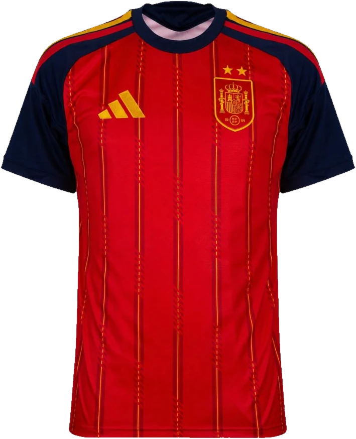
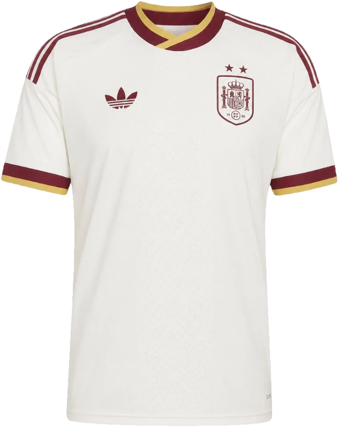

La segunda estrella
Bordada en hilo metálico sobre el escudo de la RFEF, con el mismo tono dorado que el trofeo. Es el único elemento nuevo respecto al escudo de 1909.
Campeones del Mundo · 2026
La segunda estrella ya está cosida. Presentamos la equipación oficial de la Selección Española: un homenaje al rojo histórico, tejido con hilo dorado sobre el azul de la noche en que todo cambió.
Las equipaciones
Dos piezas que cuentan la misma historia desde extremos opuestos del espectro: la intensidad del rojo histórico y la serenidad del blanco roto que la selección solo se pone cuando juega lejos de los suyos.
Primera equipación
Carmesí profundo recorrido por rayas verticales de hilo dorado, con mangas raglán en azul noche. El contraste exacto que se vio bajo los focos la noche de la final.
Segunda equipación
Crema con cuello y puños en granate ribeteados de oro, corte retro acanalado y una textura tonal en relieve inspirada en el mosaico ibérico.


El diseño
Nada en esta camiseta es decorativo. Cada línea, cada pespunte y cada gramo de tejido responde a una razón deportiva o a un capítulo de la historia de la selección.
Bordada en hilo metálico sobre el escudo de la RFEF, con el mismo tono dorado que el trofeo. Es el único elemento nuevo respecto al escudo de 1909.
Siete líneas verticales discontinuas recorren el frontal. Cambian de intensidad según la luz: casi invisibles en reposo, incandescentes bajo los focos del estadio.
Corte raglán en marino profundo, recuperando el bicolor de las equipaciones clásicas. La triple franja dorada nace en el cuello y muere en el bíceps.
Poliéster 100% reciclado con canales de ventilación láser en la zona lumbar y axilar. Un 18% más ligero que la equipación de 2024 y con secado un tercio más rápido, sin perder la caída estructurada que exige una camiseta de esta categoría.
En el interior del cuello, la fecha de la final y las coordenadas del estadio, serigrafiadas en oro sobre fondo marino.
Palmarés
Dieciséis años entre una copa y otra. Este es el recorrido que la camiseta lleva cosido.
Ficha técnica
Reserva anticipada
Las unidades de la edición Campeón son numeradas. Reserva la tuya y elige personalización con dorsal y nombre oficiales.
Envío gratuito · Devolución en 30 días · Numeración garantizada